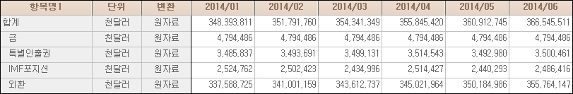

■ 외환보유고
비상금이라는 게 있습니다. 신랑은 신랑대로, 마님은 마님대로 우리는 은밀히
비상금을 마련해놓고 있습니다. 우리가 마련하는 비상금은 참 종류가 많습니다. 하지만 그중에서도 가장
대표적인 비상금은 가장이 실직할 때를 대비해 마련해놓는 비상금입니다. 새로 취업을 할 때까지 몇 개월
버틸 자금을 마련해놓는 것이죠.
그런데 비상금은 대체로 영양가가 없습니다. 왜냐하면 비상금으로 할 수 있는 것이 아무것도 없기 때문입니다.
비상금으로는 주식투자를
할 수도 없고, 부동산투자를 할 수도 없습니다. 비상금은 글자 그대로 비상금입니다.
따라서 언제든지 찾아 쓸 수 있어야 합니다. 그런데 만약 비상금으로 부동산에 투자를 했다면 큰일이 날
수도 있습니다. 급할 때 돈을 만들 수가 없기 때문입니다. 그래서일까요? 상당히 많은 집에서는 비상금을
신발장이나 쌀독에 모셔두고 있습니다.
그런데 가정의 비상금처럼 참 거시기한 돈이 또 있습니다. 바로 외환보유고라는
이름의 돈입니다.
외환보유고란?
외환보유고는 한국은행과 정부가 특별히 챙겨둔 외국 돈을 말합니다. 한국은행과 정부가 외국 돈을 챙겨두는
이유는 너무나 뻔합니다. 시중에 달러가 없어 난리가 났을 때 곡간을 풀어 달러 가뭄을 해결하기 위해서
외국돈을 챙겨두고 있습니다.
아빠의 실직으로 수입이 전혀 없을 때를 대비해 몇 개월, 또는 몇 년분의 생활비를 챙겨두는 것처럼 정부와
한국은행이 만약의 경우를 대비해 챙겨두는 달러 비상금이 바로 외환보유고입니다.
외환보유고 구성
국제거래의 기본은 누가 뭐래도 달러입니다. 달러만 있다면 원하는 것은 그 무엇이든 살 수 있습니다.
따라서 외환보유고는 100% 달러로 챙겨둬야 할 것 같습니다.
하지만 이게 또 그렇게 만만한 문제가 아닙니다. 좀 극단적인 가정이기는 하지만 미국이 쫄딱 망하면 어떻게
될까요? 우리가 챙겨둔 미국 돈은 휴짓조각이 됩니다. 물론 미국이 망할 일은 절대 없겠지만 그래도 세상일은
모르는 법입니다. 그래서 한국은행에서는 세계 각국의 잘나가는 돈을 적당히 섞어서 외환보유고를 쌓고 있습니다.
그런데 이것만으로는 좀 불안합니다. 왠지 모르게 금덩어리도 좀 챙겨두어야 할 것 같습니다. 급할 때
금덩어리만큼 확실한 것은 없기 때문입니다. 따라서 우리나라는 외국 돈과 금덩어리를 적당히 섞어서 비상금으로
챙겨놓고 있습니다.

{kind=link}
적정 외환보유고
외환보유고는 얼마쯤 챙겨놓는 것이 적당할까요? 이와 관련해서 정말 명쾌한 모범답안이 하나 있습니다.
3개월 정도는 버틸 수 있을 만큼의 달러를 마련해두어야 한다는 것이죠. 쉽게 말해서 3개월 동안 석유를
수입할 달러는 챙겨두어야 한다는 이야기입니다.
3개월분을 챙겨두는 이유는 간단합니다. 대한민국 경제가 설령 지옥으로 떨어진다고 해도 3개월 정도만
버티면 어떻게든 살길이 생긴다고 보기 때문입니다.
쉽게 말해서 아빠가 직장을 잃어도 그동안 마련해둔 비상금으로 3개월만 버티면, 취직을 하든 어떻게 해서든
돈을 마련해오는 것과 같은 이치입니다.
그런데 사실 3개월분의 달러는 많이 부족합니다. 아빠가 직장을 잃었다고 생각해보십시오. 반드시 3개월
안에 재취업을 한다는 보장이 없습니다. 불안요인은 취업의 어려움 만이 아닙니다. 아빠가 직장을 잃으면
세상인심이 갑자기 변할 수도 있기에 더욱더 불안합니다.
물론 아빠의 실직과 무관하게 세상은 늘 아름다운 것이라 말할 수는 있습니다. 하지만 빚이 좀 있다면
사정이 달라집니다. 앞으로 어떤 일이 벌어질지 모르는데 돈을 빌려준 사람들이 가만있겠습니까? 아마 직장을
잃었다는 소문을 듣는 순간 한꺼번에 몰려올 겁니다.
사실 3개월 먹고 사는 거야 손가락 빨고 살면 됩니다. 하지만 빚쟁이들이 한꺼번에 몰려오면 골치 아픕니다.
따라서 준비성 있는 어머님이라면 빚쟁이들이 몰려올 때를 대비해 ‘3개월 생활비+알파’의 비상금을 마련해두어야
합니다.
대한민국 정부 역시 마찬가지입니다. 달랑 3개월 수입대금만 챙겨놓는 것이 아니라 외국의 빚쟁이들이 달려
올 때를 대비해 달러를 좀 넉넉하게 챙겨둘 필요가 있습니다. 즉 대한민국 국민이 1년 안에 갚아야 할
빚이 100달러라면 ‘3개월 생활비+1년 안에 갚아야 할 빚 100달러’를 챙겨두어야 합니다.
그런데 이것으로도 부족하다는 이야기를 하시는 분들이 있습니다. 달러는 많을수록 좋은 법이니 악착같이
챙겨 놓아야 한다는 이야기입니다. 사실 어느 정도는 맞는 말입니다. 돈이야 많으면 많을수록 좋은 거니까요.

외환보유고의 운용
아기가 아플 때를 대비해, 또는 아빠가 실직할 때를 대비해 특별히 챙겨두는 비상금은 안전빵이 최고입니다.
따라서 현금으로 가지고 있거나, 보통예금통장처럼 언제든지 찾을 수 있는 형태로 보관을 해야 합니다.
물론 이 돈으로 주식투자나 부동산투자를 해 2배, 3배로 뻥튀기할 수도 있습니다. 하지만 비상금은 역시
안전빵이 최고입니다.
외환보유고 역시 마찬가지입니다. 가장 확실하게 외환보유고를 보관하는 방법은 한국은행 창고에 현금으로
쌓아놓는 것입니다. 하지만 이건 좀 많이 무식합니다. 그래서 어쩔 수 없이 한국은행은 확보한 달러를
굴리고 있습니다.
그런데 이 돈으로 해외의 부동산을, 해외의 주식을 살 수는 없습니다. 왜냐하면 급하게 달러가 필요할
때 해외 부동산이 팔리지 않으면 큰일 나기 때문입니다.
그래서 언제든지 사고팔 수 있고, 또 상대적으로 안전한 물건에 투자를 합니다. 대표적인 것이 미국정부가
발행하는 채권입니다.
다른 투자수단에 비해 돈이 별로 안 되는 것은 사실이지만 그래도 안전이 최고인 만큼 어쩔 수 없이 외환보유고의
가장 많은 부분을 미국 국채에 투자하고 있습니다.